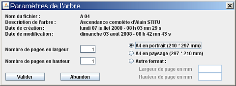

Ouvrir un arbre - Enregistrer un arbre - Fermer l'arbre - Préférences - Arbre - Générer PDF - Générer images - Gérer les moddèles d'étiquettes - Gestion des fichiers - Réouvrir un arbre
Le menu Fichier permet de :
Un arbre possède des caractéristiques :
Le nom de fichier associé est utilisé pour générer les fichiers PDF et les images. |
Par cette commande, vous pouvez ouvrir un arbre qui a déjà été enregistré. GénéGraphe vous propose la liste des arbres existants, vous sélectionnez celui que vous souhaitez ouvrir et vous cliquez sur Valider. La description des arbres est celle qui est donnée lors de leur enregistrement.
Attention : cette opération remplace l'arbre existant, même s'il n'a pas été sauvegardé.
Cette opération permet d'enregistrer l'arbre en cours d'édition. Quand vous la choisissez, GénéGraphe vous ouvre la fenêtre suivante :

Vous trouvez, en haut, la liste des arbres déjà enregistrés. En bas, vous trouvez les champs «Nom de fichier» et «Description de l'arbre». Vous pouvez changer ces valeurs. Si l'arbre a déjà été enregistré, ces champs sont renseignés.
Le nom de fichier est utilisé lors de la génération de fichier PDF et de fichier image.
La description est utilisée dans la fenêtre d'ouverture d'arbre.
Attention : si vous donnez le même nom de fichier à deux arbres, lors de la génération des fichiers PDF et images, vous écraserez les fichiers précédents. Vous ne pourrez pas avoir en même temps les fichiers des deux arbres.
Remarque : le fait de changer le nom du fichier n'a pas pour conséquence d'enregistrer l'arbre sous un autre nom, comme le ferait une commande «Enregistrer sous». Cette possibilité de créer un arbre à partir d'un autre n'existe pas.
Ce choix du menu fichier ferme l'arbre courant. Vous retrouvez alors une page vierge et votre arbre n'a jamais été sauvegardé.
Ce choix est traité dans un chapitre à part.
Vous voyez les renseignements généraux de l'arbre :
Vous pouvez modifier ici les paramètres spécifiques à l'arbre comme le nombre de pages en largeur et en hauteur et le format de page.
Le nom de fichier et la description sont modifiables dans la fenêtre de gestion des fichiers.
Quand vous modifiez le nombre de pages en largeur et/ou en hauteur, la fenêtre de travail tient compte de ces valeurs. Les pages sont matérialisées par des traits pointillés bleus. Il en est de même quand vous modifiez le format de la page.

Quand vous demandez cette opération, GénéGraphe génère un fichier PDF contenant l'arbre tel que vous l'avez à l'écran. Ce fichier est généré dans le répertoire précisé dans les préférences et il a comme nom celui que vous avez précisé dans les paramètres de l'arbre.
Quand la génération est terminée, GénéGraphe vous en avertit :

Pour plus de renseignements sur la génération des fichiers PDF, voir le chapitre spécifique.
Quand vous demandez cette opération, GénéGraphe génère un ou plusieurs fichiers images (format PNG) représentant l'arbre tel que vous l'avez à l'écran. Ces fichiers sont générés dans le répertoire précisé dans les préférences. Leur nom se base sur celui que vous avez précisé dans les paramètres de l'arbre.
Le nom de l'image générée est «Arbre01_0_0.png». Voici comment il est constitué :
Voici les noms des fichiers générés pour un arbre qui contient 3 pages en largeur et 2 pages en hauteur.
Arbre01_0_0.png |
Arbre01_0_1.png |
Arbre01_0_2.png |
Arbre01_1_0.png |
Arbre01_1_1.png |
Arbre01_1_2.png |
Ces images sont visibles dans Généamania. Allez dans la fiche d'une personne, le menu déroulant sous l'icône d'arbre vous permettra d'afficher toutes les images d'arbres liées à la personne :
Voir la page consacrée à cette fonctionnalité.
Voir la page consacrée à cette fonctionnalité.
La partie basse du menu fichier vous propose la liste des 10 derniers arbres mis à jour. En cliquant sur un nom, vous l'ouvrez.